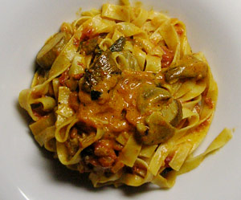

Tagliatelle ai funghi porcini
5 von 6Die geschnittenen Steinpilze mit Knoblauch in Olivenöl andämpfen. Separat Zwiebeln und Peperoncino in Olivenöl mit etwas Butter glasig werden lassen. Eine Büchse Pellati dazugeben. Mit Salz und Pfeffer abschmecken. Die Steinpilze zur Tomatensauce geben und das ganze mit Petersilie und etwas Rahm beenden.
